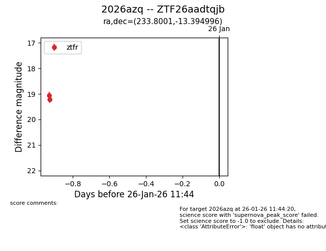
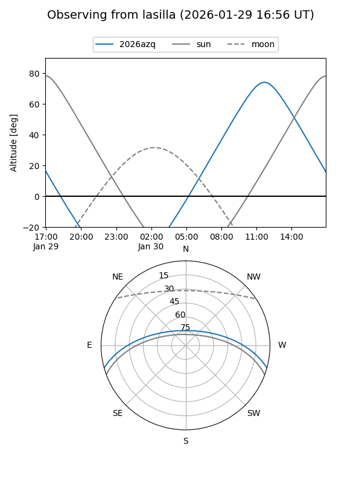
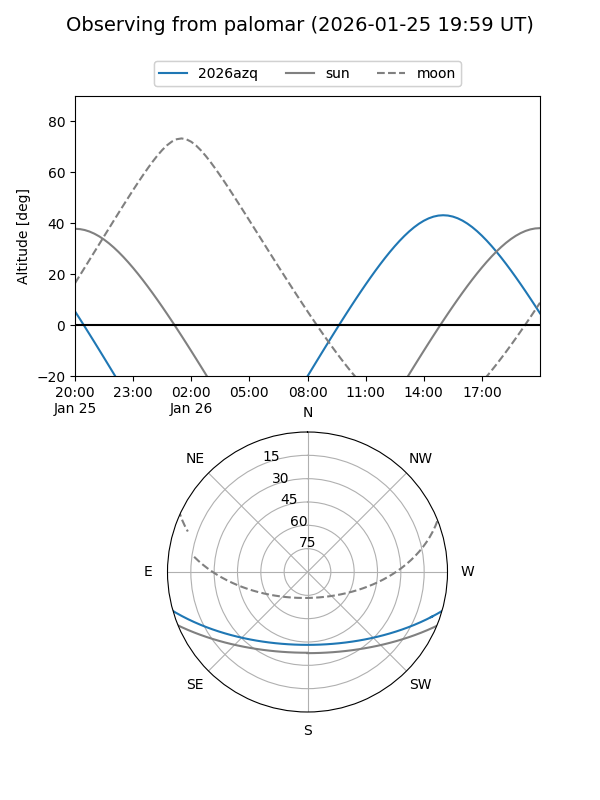

2026azq
Target 2026azq at 2026-01-26 18:56
Aliases and brokers:
FINK: link
Lasair: link
ALeRCE: link
TNS: link
YSE: link
alt names
ZTF26aadtqjb (ztf,fink_ztf)
2026azq (tns,yse)
Coordinates:
equatorial (ra, dec) = 233.8001,-13.39500
equatorial (HMS+DMS) = 15:35:12.01,-13:23:41.98
galactic (l, b) = (352.5977,+33.25487)
Flags:
Photometry:
last ztfr=19.21
2 ztfr detections
Lightcurve

Visibility


Additional plots